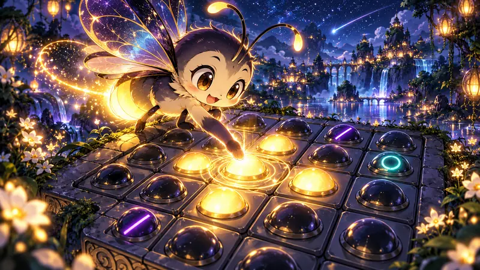

『ぜんぶつけて』は、マスを押してライトを反転させ、すべて点灯させるパズルです。暗いマスだけを追いかけると、隣のライトを消して迷いやすくなります。押す範囲を先に確かめ、同じマスを2回押すと元へ戻る性質を使って考えてみましょう。

ルドット編集部 ／ 公開・仕様確認：2026年10月23日
目標は、穴以外のライトを全部つけること
盤は5×5で、ステージは全50。通常の＋マスを押すと、そのマスと上下左右のライトが入れかわります。点灯中なら消え、消灯中なら点灯します。穴のマスは押せず、点灯させる必要もありません。
端のマスでは盤の外へは作用しません。穴のない盤なら、中央の＋マスは5か所、辺は4か所、角は3か所を変えます。押す前にマウスを重ねるか、指で押さえて、光る予告の範囲を確認しましょう。
同じマス2回の操作は打ち消し合う
ライトは押すたびに反転するので、同じマスを2回押せば、影響するライトがすべて元へ戻ります。途中に別のマスを押していても、この打ち消し合いは変わりません。押す順番より、どのマスを奇数回押したかが最後の形を決めます。
たとえばAを押してからBを押す場合と、Bを押してからAを押す場合は、同じ盤面になります。ただし全部ついた時点でクリアとなるため、考えるときはクリア前の状態で比べてください。
特別マスは、押す範囲が違う
| 種類 | 変わるライト | 初登場 |
|---|---|---|
| ＋マス | 自分と上下左右 | ステージ1 |
| 穴 | 押せない・ライトなし | ステージ11 |
| ✕マス | 自分とななめ4方向 | ステージ21 |
| わっかマス | 上下左右だけ。自分は変わらない | ステージ31 |
暗いわっかマスを押しても、そのライト自体はつきません。周囲のどのマスから作用させられるかを、予告表示で確認します。ステージ41以降は種類が混ざるので、見た目が似ていても毎回範囲を見るのが確実です。
星3つには、最小手数とヒントなしの両方が必要
画面の「さいしょう てすう」以内で、ヒントを使わずにクリアすると星3つです。最小手数＋3手までなら星2つ、それより多ければ星1つです。ヒントを使った回は、最小手数で解いても星2つまでになります。
ヒントは押す候補を光らせますが、自動では押しません。「もどす」で盤面と手数は戻せますが、ヒントを使った事実は消えません。「さいしょ」で盤面を戻した場合も同じです。ヒントなしで星3つに挑戦し直すときは、メニューへ戻って同じステージを開き直します。
まずは1回ずつ、予告と結果を見比べる
- 消えているライトの位置を確認する。
- 候補のマスにマウスを重ねるか、指で押さえ、変わる範囲を見る。
- 1回押し、ついた場所と消えた場所を確かめる。
- 意図と違えば「もどす」で直前へ戻る。迷ったらヒントで候補を1つ確認する。
キーボードは矢印でマスを選び、EnterまたはSpaceで押します。Zで戻す、Hでヒント、Rで最初の盤面、Escでメニューです。ランダムには「かんたん」「ふつう」「むずかしい」の3段階があり、ステージとは別の問題に挑戦できます。
よくある質問
この記事は公開ゲームのルール・操作・記録の実装を照合して作成しました。実プレイ結果の計測記事ではありません。誤りはお問い合わせからお知らせください。